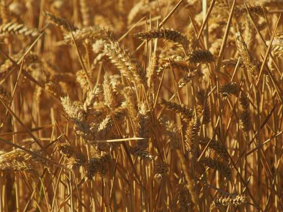
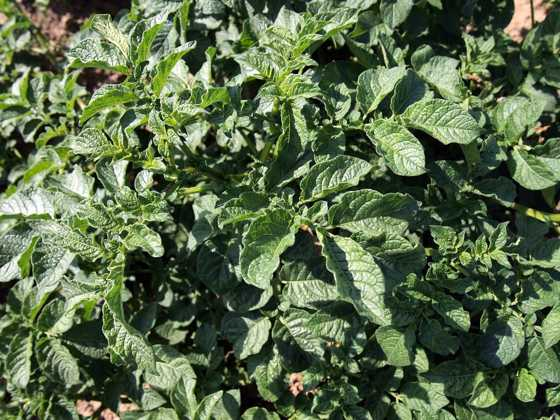
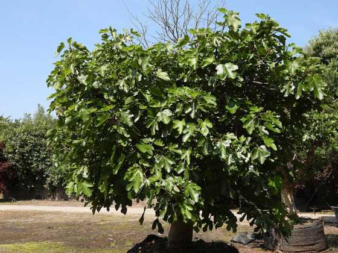
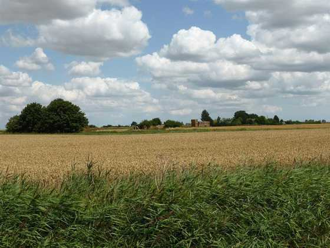

季節のおやつ しずく
ひと粒の季節を、小さなベーグルとおやつにのせて。
福井県鯖江市・季節のおやつとベーグルの小さなお店
お店の由来・想い
「自分のお店を持ちたい」から始まった、母と娘の小さな工房。
新聞の紹介記事によると、オーナーは以前まったく別の分野で働いていましたが、「自身でお店を持ちたい」という思いから開業。ケーキ店とパン屋での経験を持つ娘さんと一緒に、2023年9月13日にオープンしました。
- ベーグルは、北海道産の小麦と天然酵母、きび砂糖を使った無添加の生地。赤ちゃんでも食べられるよう、はちみつは使っていないと紹介されています。
- 自家栽培のじゃがいもやブルーベリーなど、国内産・地場産の食材にこだわっています。
- サイズは小さめで、いろいろな味を少しずつ試せます。お客様の声から、猫の肉球形の焼き菓子が生まれたこともあるそうです。
- テイクアウト専門。細い路地の先にある隠れ家のようなお店で、売り切れ次第終了とされています。




店名「しずく」の意味は確認できていません。ヒーローの一文とロゴの雫の形は、小さく丁寧に季節を届けるお店という、制作側のイメージです。
情報源: 福井新聞「ふくジェンヌ」/福井の旬な街ネタ ふーぽ/Instagram(2023年時点の記事を含みます)
メニュー
季節の食材で焼く、ベーグルと焼き菓子。
取材記事で紹介されていた例です(季節で入れ替わります。現在の品ぞろえ・価格は準備中です)。

ベーグル
プレーン、いちじくくるみ、抹茶あんこ、季節の限定品など。具材は季節で変わります。

焼き菓子
スイートポテトや猫の肉球形の抹茶味の焼き菓子などが紹介されました。

新作
新しい商品を折々に開発していると紹介されています。
| 価格 | 準備中 |
|---|---|
| 営業時間 | 準備中 |
| 定休日 | 準備中 |
| 電話 | 準備中 |




口コミ
お客様の声(イメージ例)
イメージ例
小ぶりなので、気になる味を二つ三つ選べるのがうれしいです。
ご来店のお客様(創作)
イメージ例
もちっとした生地で、季節ごとの味が楽しみになりました。
ご来店のお客様(創作)
イメージ例
細い路地の先の小さなお店。見つけたときのわくわく感があります。
ご来店のお客様(創作)
上記は制作側が作った例で、実在のお客様の声ではありません。


アクセス
鯖江市下河端町の、小さなお店。
| 住所 | 日本、〒916-0038 福井県鯖江市下河端町57-58 |
|---|---|
| @oyatsu_shizuku | |
| 電話 | 準備中 |
公式のホームページは見つかりませんでした。最新情報はInstagramをご覧ください。
Instagramを見る